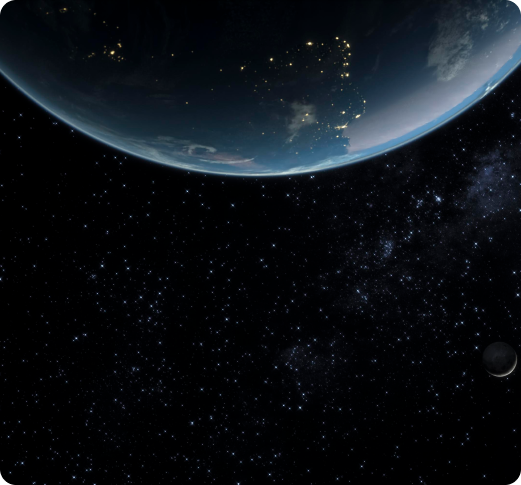
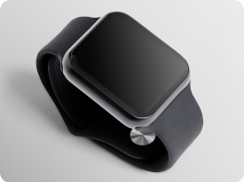

منتخب

گجت
اشتباهاتی که ممکن است با ساعت خود مرتکب شوید
استایل و مد
نکاتی درمورد پوشیدن لباس در زمستان وقتی هوا واقعا سرد است
غذا
فواید شگفتانگیز خربزه عسلک
غذا
دستور تهیه برگر مرغ تند
سبک زندگی

گجت
اشتباهاتی که ممکن است با ساعت خود مرتکب شوید
نیما ماهپور * 8 ماه قبل

گجت
اگر درحال بازی کردن هستید، هدست گزینه مناسبتری است
فائزه کاهنی * 3 ماه قبل

گجت
بخند، گریهکن، سرگرمشو و در واقعیت مجازی بیاموز
سینا صمدزاد * 1 ماه قبل